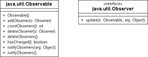
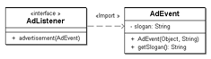

10.2 Design-Pattern (Entwurfsmuster)
Aus dem objektorientierten Design haben wir gelernt, dass Klassen nicht fest miteinander verzahnt, sondern lose gekoppelt sein sollen. Das bedeutet, Klassen sollten nicht zu viel über andere Klassen wissen, und die Interaktion soll über wohldefinierte Schnittstellen erfolgen, sodass die Klassen später noch verändert werden können. Die lose Kopplung hat viele Vorteile, da so die Wiederverwendung erhöht und das Programm änderungsfreundlicher wird. Wir wollen dies an einem Beispiel prüfen.
In einer Datenstruktur sollen Kundendaten gespeichert werden. Zu dieser Datenquelle gibt es eine grafische Oberfläche, die diese Daten anzeigt und verwaltet, etwa eine Eingabemaske. Wenn Daten eingegeben, gelöscht und verändert werden, sollen sie in die Datenstruktur übernommen werden. Den anderen Weg von der Datenstruktur in die Visualisierung werden wir gleich beleuchten. Bereits jetzt haben wir eine Verbindung zwischen Eingabemaske und Datenstruktur, und wir müssen aufpassen, dass wir uns im Design nicht verzetteln, denn vermutlich läuft die Programmierung darauf hinaus, dass beide fest miteinander verbunden sind. Wahrscheinlich wird die grafische Oberfläche irgendwie über die Datenstruktur Bescheid wissen, und bei jeder Änderung in der Eingabemaske werden direkt Methoden der konkreten Datenstruktur aufgerufen. Das wollen wir vermeiden. Genauso haben wir nicht bedacht, was passiert, wenn nun infolge weiterer Programmversionen eine grafische Repräsentation der Daten etwa in Form eines Balkendiagramms gezeichnet wird. Und was geschieht, wenn der Inhalt der Datenstruktur über eine andere Programmstelle geändert wird und dann einen Neuaufbau der Bildschirmdarstellung erzwingt? Hier verfangen wir uns in einem Knäuel von Methodenaufrufen, und änderungsfreundlich ist dies dann auch nicht mehr. Was ist, wenn wir nun unsere selbst gestrickte Datenstruktur durch eine SQL-Datenbank ersetzen wollen?
10.2.1 Motivation für Design-Pattern
Wir sind nicht die Ersten, die sich über grundlegende Design-Kriterien Gedanken machen. Vor dem objektorientierten Programmieren (OOP) gab es das strukturierte Programmieren, und die Entwickler waren froh, mit Werkzeugen schneller und einfacher Software bauen zu können. Auch die Assembler-Programmierer waren erfreut, strukturiertes Programmieren zur Effizienzsteigerung einsetzen zu können – sie haben ja auch Unterprogramme nur deswegen eingesetzt, weil sich mit ihnen wieder ein paar Bytes sparen ließen. Doch nach Assembler und dem strukturierten Programmieren sind wir nun bei der Objektorientierung angelangt, und dahinter zeichnet sich bisher kein revolutionäres Programmierparadigma ab. Die Softwarekrise hat zu neuen Konzepten geführt, doch merkt fast jedes Entwicklungsteam, dass OO nicht alles ist, sondern nur ein verwunderter Ausspruch nach drei Jahren Entwicklungsarbeit an einem schönen Finanzprogramm: »Oh, oh, alles Mist.« So schön OO auch ist, wenn sich 10.000 Klassen im Klassendiagramm tummeln, ist das genauso unübersichtlich wie ein FORTRAN-Programm mit 10.000 Zeilen. Da in der Vergangenheit oft gutes Design für ein paar Millisekunden Laufzeit geopfert wurde, ist es nicht verwunderlich, dass Programme nicht mehr lesbar sind. Doch wie am Beispiel des Satzprogramms TeX (etwa 1985) zu sehen ist: Code lebt länger als Hardware, und die nächste Generation von Mehrkernprozessoren wird sich bald in unseren Desktop-PCs nach Arbeit sehnen.
Es fehlt demnach eine Ebene über den einzelnen Klassen und Objekten, denn die Objekte selbst sind nicht das Problem, vielmehr ist es die Kopplung. Hier helfen Regeln weiter, die unter dem Stichwort Entwurfsmuster (engl. design patterns) bekannt geworden sind. Dies sind Tipps von Softwaredesignern, denen aufgefallen war, dass viele Probleme auf ähnliche Weise gelöst werden können. Sie haben daher Regelwerke mit Lösungsmustern aufgestellt, die eine optimale Wiederverwendung von Bausteinen und Änderungsfreundlichkeit aufweisen. Design-Patterns ziehen sich durch die ganze Java-Klassenbibliothek, und die bekanntesten sind das Beobachter-(Observer-)Pattern, Singleton, Fabrik (Factory) und Composite; die Fabrik und das Singleton haben wir bereits kennengelernt.
10.2.2 Das Beobachter-Pattern (Observer/Observable)
Wir wollen uns nun mit dem Observer-Pattern beschäftigen, das seine Ursprünge in Smalltalk-80 hat. Dort ist es etwas erweitert unter dem Namen MVC (Model-View-Controller) bekannt, ein Kürzel, mit dem auch wir uns noch näher beschäftigen müssen, da dies ein ganz wesentliches Konzept bei der Programmierung grafischer Bedieneroberflächen mit Swing ist.
Stellen wir uns eine Party mit einer netten Gesellschaft vor. Hier finden sich zurückhaltende, passive Gäste und aktive Erzähler. Die Zuhörer sind interessiert an den Gesprächen der Unterhalter. Da die Erzähler nun von den Zuhörern beobachtet werden, bekommen sie den Namen Beobachtete, auf Englisch auch observables (Beobachtbare) genannt. Die Erzähler interessieren sich jedoch nicht dafür, wer ihnen zuhört. Für sie sind alle Zuhörer gleich. Sie schweigen aber, wenn ihnen überhaupt niemand zuhört. Die Zuhörer reagieren auf Witze der Unterhalter und werden dadurch zu Beobachtern (engl. observers).
Die Klasse Observable und die Schnittstelle Observer
Unser Beispiel mit den Erzählern und Zuhörern können wir auf Datenstrukturen übertragen. Die Datenstruktur lässt sich beobachten und wird zum Beobachteten. Sie wird in Java als Exemplar der Bibliotheksklasse Observable repräsentiert. Der Beobachter wird durch die Schnittstelle Observer abgedeckt und ist der, der informiert werden will, wenn sich die Datenstruktur ändert. Jedes Exemplar der Observable-Klasse informiert nun alle seine Horcher, sobald sich sein Zustand ändert. Denken wir wieder an unser ursprüngliches Beispiel mit der Visualisierung. Wenn wir nun zwei Ansichten der Datenstruktur haben, etwa die Eingabemaske und ein Balkendiagramm, dann ist es der Datenstruktur egal, wer an den Änderungen interessiert ist. Ein anderes Beispiel: Die Datenstruktur enthält einen Wert, der durch einen Schieberegler und ein Textfeld angezeigt wird. Beide Bedienelemente wollen informiert werden, wenn sich dieser Wert ändert. Es gibt viele Beispiele für diese Konstellation, sodass die Java-Entwickler die Klasse Observable und die Schnittstelle Observer mit in die Standardbibliothek aufgenommen haben. Noch besser wäre die Entscheidung gewesen, die Funktionalität in die oberste Klasse Object aufzunehmen, so wie es Smalltalk macht.
Die Klasse Observable
Eine Klasse, deren Exemplare sich beobachten lassen, muss jede Änderung des Objektzustands nach außen hin mitteilen. Dazu bietet die Klasse Observable die Methoden setChanged() und notifyObservers() an. Mit setChanged() wird die Änderung angekündigt, und mit notifyObservers() wird sie tatsächlich übermittelt. Gibt es keine Änderung, so wird notifyObservers() auch niemanden benachrichtigen.
Wir wollen nun das Party-Szenario in Java implementieren. Dazu schreiben wir eine Klasse JokeTeller, deren Objekte einen Witz erzählen können. Sie machen mit setChanged() auf eine Änderung ihres Zustands aufmerksam und versorgen dann mit notifyObservers() die Zuhörer mit dem Witz in Form einer Zeichenkette:
Listing 10.1: com/tutego/insel/pattern/observer/JokeTeller.java
package com.tutego.insel.ds.observer;
import java.util.*;
class JokeTeller extends Observable
{
private static final List<String> jokes = Arrays.asList(
"Sorry, aber du siehst so aus, wie ich mich fühle.",
"Eine Null kann ein bestehendes Problem verzehnfachen.",
"Wer zuletzt lacht, hat es nicht eher begriffen.",
"Wer zuletzt lacht, stirbt wenigstens fröhlich.",
"Unsere Luft hat einen Vorteil: Man sieht, was man einatmet."
);
public void tellJoke()
{
setChanged();
Collections.shuffle( jokes );
notifyObservers( jokes.get(0) );
}
}
setChanged() setzt intern ein Flag, das von notifyObservers() abgefragt wird. Nach dem Aufruf von notifyObservers() wird dieses Flag wieder gelöscht. Dies kann auch manuell mit clearChanged() geschehen. notifyObservers() sendet nur dann eine Benachrichtigung an die Zuhörer, wenn auch das Flag gesetzt ist. So kommen folgende Programmzeilen häufig zusammen vor, da sie das Flag setzen und alle Zuhörer informieren:
setChanged(); // Eine Änderung ist aufgetreten
notifyObservers( Object ); // Informiere Observer über Änderung
Die notifyObservers()-Methode existiert auch ohne extra Parameter. Sie entspricht einem notifyObservers(null). Mit der Methode hasChanged() können wir herausfinden, ob das Flag der Änderung gesetzt ist.
Abbildung 10.1: Klassendiagramm für Observable und Observer
Interessierte Beobachter müssen sich am Observable-Objekt mit der Methode addObserver(Observer) anmelden. Dabei sind aber keine beliebigen Objekte als Beobachter erlaubt, sondern nur solche, die die Schnittstelle Observer implementieren. Sie können sich mit deleteObserver(Observer) wieder abmelden. Die Anzahl der angemeldeten Observer teilt uns countObservers() mit. Leider ist die Namensgebung etwas unglücklich, da Klassen mit der Endung »able« eigentlich immer Schnittstellen sein sollten. Genau das ist hier aber nicht der Fall. Der Name Observer bezeichnet überraschenderweise eine Schnittstelle, und hinter dem Namen Observable verbirgt sich eine echte Klasse.
class java.util.Observable |
- void addObserver(Observer o)
Fügt einen Observer hinzu. Das Argument darf nicht null sein. - int countObservers()
Liefert die Anzahl angemeldeter Observer. - void deleteObserver(Observer o)
Entfernt den Observer o wieder. - void deleteObservers()
Löscht alle angemeldeten Observer. - void setChanged()
Markiert das Objekt als sendebereit, sodass bei notifyObservers() Meldungen gegeben werden. - void clearChanged()
Setzt den Zustand zurück, sodass bei notifyObservers() keine Meldungen gegeben werden. - boolean hasChanged()
Liefert true, wenn das Objekt im Meldemodus ist. - void notifyObservers(Object arg)
Liefert hasChanged() wahr, dann informiert das Observable alle Observer und übergibt arg der update()-Methode. - void notifyObservers()
Entspricht notifyObservers(null).
Die Schnittstelle Observer
Das aktive Objekt, der Sender der Nachrichten, ist ein Exemplar der Klasse Observable, das Benachrichtigungen an angemeldete Objekte schickt. Das aktive Objekt informiert alle zuhörenden Objekte, die die Schnittstelle Observer implementieren müssen.
Jetzt können wir für die Party auch die Zuhörer implementieren:
Listing 10.2: com/tutego/insel/pattern/observer/JokeListener.java
package com.tutego.insel.pattern.observer;
import java.util.*;
class JokeListener implements Observer
{
final private String name;
JokeListener( String name )
{
this.name = name;
}
@Override public void update( Observable o, Object arg )
{
System.out.println( name + " lacht über: \"" + arg + "\"" );
}
}
interface java.util.Observer |
- void update(Observable o, Object arg)
Wird bei Benachrichtigungen vom Observable o aufgerufen. Als zweites Argument trifft die über notifyObservers(Object) verschickte Nachricht ein. Bei der parameterlosen Variante notifyObservers() ist der aktuelle Parameter null.
Party-Beispiel mit Observer/Observable
Da auf einer echten Party die Zuhörer und Erzähler nicht fehlen dürfen, baut die dritte Klasse Party nun echte Stimmung auf:
Listing 10.3: com/tutego/insel/pattern/observer/Party.java
package com.tutego.insel.pattern.observer;
import java.util.*;
public class Party
{
public static void main( String[] args )
{
Observer achim = new JokeListener( "Achim" );
Observer michael = new JokeListener( "Michael" );
JokeTeller chris = new JokeTeller();
chris.addObserver( achim );
chris.tellJoke();
chris.tellJoke();
chris.addObserver( michael );
chris.tellJoke();
chris.deleteObserver( achim );
chris.tellJoke();
}
}
Wir melden zwei Zuhörer nacheinander an und einen wieder ab. Dann geht das Lachen los.
Schwierigkeiten von Observer/Observable
Die Typen Observer/Observable bieten eine grundlegende Möglichkeit, das Beobachter-Muster in Java zu realisieren. Allerdings gibt es ein paar Dinge, die Entwickler sich noch zusätzlich wünschen:
- Die Typen Observer/Observable sind nicht generisch deklariert, was dazu führt, dass bei update() immer nur alles als Object übergeben werden kann. In update() muss der Typ des Objekts oft auf den wirklichen Typ »hochgecastet« werden, um etwa Daten aus dem Ereignisobjekt zu entnehmen.
- Oder Observer deklariert nur genau eine update()-Methode. Wenn der Ereignisauslöser unterschiedliche Ereignisse melden möchte, gibt es nur eine Lösung: unterschiedliche Ergebnis-Objekte. Das wiederum führt zu Fallunterscheidungen in der update()-Methode, und die Codequalität verschlechtert sich. Besser wären mehrere update()-Methoden, die im Optimalfall auch nicht einfach nur update() hießen, sondern semantisch starke Namen tragen würden. Das Interessante ist, dass bei verschiedenen Methoden auch gar kein Event-Objekt mehr nötig wäre, sodass dieses Modell ohne Zustand auskäme, solange keine Ereignisdaten zu übermitteln sind.
Um das erste Problem zu lösen, können wir eine generische Deklaration der Schnittstelle/Klasse angeben:
Listing 10.4: com/tutego/insel/pattern/observer/generic/Observer.java, Observer
interface Observer<T>
{
public void update( Observable<T> o, T arg );
}
Listing 10.5: com/tutego/insel/pattern/observer/generic/Observable.java, Observable
public class Observable<T>
{
private final List<Observer<T>> observers = new ArrayList<Observer<T>>();
public void addObserver( Observer<T> observer )
{
if ( ! observers.contains( observer ) )
observers.add( observer );
}
public void deleteObserver( Observer<?> observer )
{
observers.remove( observer );
}
public void notifyObservers( T arg )
{
for ( Observer<T> observer : observers )
observer.update( this, arg );
}
}
Um es einfach zu halten, sind nur die zentralen Methoden in Observable realisiert, und die Frage der Nebenläufigkeit wurde beiseitegeschoben.
Kommen wir zu unserem Party-Beispiel zurück: Dann ist das Ereignis vom Typ String, sodass der JokeListener daraufhin Observer<String> implementiert und update(Observable<String> o, String arg) realisiert und der JokeTeller die Klasse Observable<String> erweitert.
10.2.3 Ereignisse über Listener
Eine zweite Variante zur Implementierung des Beobachter-Musters sind Listener. Sie lösen die beiden genannten Probleme von eben. Es gibt Ereignisauslöser, die spezielle Ereignis-Objekte aussenden, und Interessenten, die sich bei den Auslösern an- und abmelden. Die beteiligten Klassen und Schnittstellen folgen einer bestimmten Namenskonvention; XXX steht im Folgenden stellvertretend für einen Ereignisnamen:
- Eine Klasse für die Ereignisobjekte heißt XXXEvent. Die Ereignisobjekte können Informationen wie Auslöser, Zeitstempel und weitere Daten speichern.
- Die Interessenten implementieren als Listener eine Java-Schnittstelle, die XXXListener heißt. Die Operation der Schnittstelle kann beliebig lauten, doch wird ihr üblicherweise das XXXEvent übergeben. Anders als beim Observer/Observable kann diese Schnittstelle auch mehrere Operationen vorschreiben.
- Der Ereignisauslöser bietet Methoden addXXXListener(XXXListener) und removeXXXListener(XXXListener) an, um Interessenten an- und abzumelden. Immer dann, wenn ein Ereignis stattfindet, erzeugt der Auslöser das Ereignisobjekt XXXEvent und informiert jeden Listener, der in der Liste eingetragen ist, über einen Aufruf der Methode aus dem Listener.
Ein Beispiel soll die beteiligten Typen verdeutlichen:
Radios spielen Werbung
Ein Radio soll für Werbungen AdEvent-Objekte aussenden. Die Ereignis-Objekte sollen den Werbespruch (Slogan) speichern:
Listing 10.6: com/tutego/insel/pattern/listener/AdEvent.java
package com.tutego.insel.pattern.listener;
import java.util.EventObject;
public class AdEvent extends EventObject
{
private String slogan;
public AdEvent( Object source, String slogan )
{
super( source );
this.slogan = slogan;
}
public String getSlogan()
{
return slogan;
}
}
Die Klasse AdEvent erweitert die Java-Basisklasse EventObject, eine Klasse, die alle Ereignis-Klassen erweitern. Der parametrisierte Konstruktor von AdEvent nimmt im ersten Parameter den Ereignisauslöser an und gibt ihn mit super(source) an den Konstruktor der Oberklasse weiter, der ihn speichert und mit getSource() wieder verfügbar macht. Der zweite Parameter vom AdEvent-Konstruktor ist unsere Werbung.
Der AdListener ist die Schnittstelle, die Interessenten implementieren:
Listing 10.7: com/tutego/insel/pattern/listener/AdListener.java
package com.tutego.insel.pattern.listener;
import java.util.EventListener;
interface AdListener extends EventListener
{
void advertisement( AdEvent e );
}
Unser AdListener implementiert die Schnittstelle EventListener (eine Markierungsschnittstelle), die alle Java-Listener implementieren sollen. Wir schreiben für konkrete Listener nur eine Operation advertisement() vor.
Abbildung 10.2: Klassendiagramm von AdListener, das EdEvent referenziert
Das Radio soll nun Interessenten an- und abmelden können. Es sendet über einen Timer Werbenachrichten. Das Spannende an der Implementierung ist die Tatsache, dass die Listener nicht in einer eigenen Datenstruktur verwaltet werden, sondern dass eine spezielle Listener-Klasse aus dem Swing-Paket verwendet wird:
Listing 10.8: com/tutego/insel/pattern/listener/Radio.java
package com.tutego.insel.pattern.listener;
import java.util.*;
import javax.swing.event.EventListenerList;
public class Radio
{
private EventListenerList listeners = new EventListenerList();
private List<String> ads = Arrays.asList( "Jetzt explodiert auch der Haarknoten",
"Red Fish verleiht Flossen",
"Bom Chia Wowo",
"Wunder Whip. Iss milder." );
public Radio()
{
new Timer().schedule( new TimerTask()
{
@Override public void run()
{
Collections.shuffle( ads );
notifyAdvertisement( new AdEvent( this, ads.get(0) ) );
}
}, 0, 500 );
}
public void addAdListener( AdListener listener )
{
listeners.add( AdListener.class, listener );
}
public void removeAdListener( AdListener listener )
{
listeners.remove( AdListener.class, listener );
}
protected synchronized void notifyAdvertisement( AdEvent event )
{
for ( AdListener l : listeners.getListeners( AdListener.class ) )
l.advertisement( event );
}
}
Die Demo-Anwendung nutzt das Radio-Objekt und implementiert einen konkreten Listener:
package com.tutego.insel.pattern.listener;
public class RadioDemo
{
public static void main( String args[] )
{
Radio r = new Radio();
class ComplainingAdListener implements AdListener {
@Override public void advertisement( AdEvent e ) {
System.out.println( "Oh nein, schon wieder Werbung: " + e.getSlogan() );
}
}
r.addAdListener( new ComplainingAdListener() );
}
}
Die Java API-Dokumentation enthält einige generische Typen:
class javax.swing.event.EventListenerList |
- EventListenerList()
Erzeugt eine Klasse zum Speichern von Listenern. - <T extends EventListener> void add(Class<T> t, T l)
Fügt einen Listener l vom Typ T hinzu. - Object[] getListenerList()
Liefert ein Feld aller Listener. - <T extends EventListener> T[] getListeners(Class<T> t)
Liefert ein Feld aller Listener vom Typ t. - int getListenerCount()
Nennt die Anzahl aller Listener. - int getListenerCount(Class<?> t)
Nennt die Anzahl der Listener vom Typ t. - <T extends EventListener> void remove(Class<T> t, T l)
Entfernt den Listener l aus der Liste.
Ihr Kommentar
Wie hat Ihnen das <openbook> gefallen? Wir freuen uns immer über Ihre freundlichen und kritischen Rückmeldungen.
 Jetzt bestellen
Jetzt bestellen


{kind=link}
{kind=link}